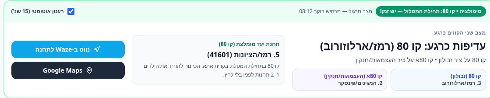
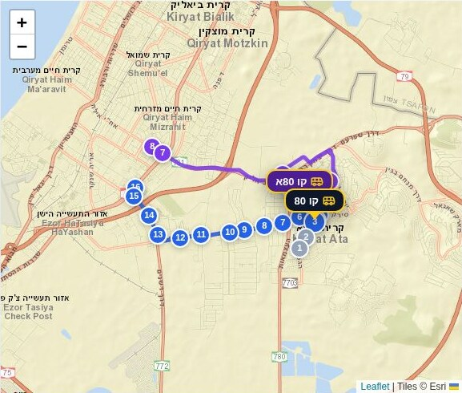

מעקב קווים 80 ו־80א
כלי לתושבי קריית אתא שנוסעים לקריית שמואל בחיפה, ולהורים שרוצים לבחור תחנת איסוף להורדת הילדים בבוקר.
פתיחת האפליקציהאיך משתמשים?
- בחרו קו 80, קו 80א, או הציגו את שניהם יחד.
- בדקו את המפה, את רשימת התחנות ואת ההמלצה לתחנת איסוף. אפשר לפתוח ניווט לתחנה ב־Waze או ב־Google Maps.
- בחרו ״הדגמה (08:00)״ כדי להכיר את המסך גם כשאין דיווחי מיקום.
מצב זמן אמת תלוי בזמינות ובטריות הדיווחים של Open Bus Stride. מצב ההדגמה מציג תרחיש לדוגמה.
מתוך האפליקציה

